ARTESANIAS
La península de Yucatán, que abarca los estados de Yucatán,
Quintana Roo y Campeche, es un territorio con una gran diversidad de
expresiones artesanales que reflejan la historia, la cosmovisión y el
talento de los pueblos mayas y mestizos que habitan la región.
1. Hamacas
Las hamacas yucatecas son reconocidas por su calidad artesanal, comodidad y belleza. Si
estás en Campeche o en cualquier parte de México, tienes varias
opciones para adquirir estas piezas únicas hechas a mano por artesanos
locales.
Hamacas Destacadas
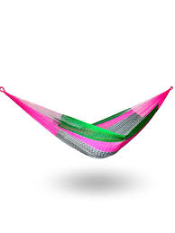
-
Hamaca Azul y Natural Ideal, Grande, Algodón: Con un estilo boho y materiales de alta calidad, perfecta para interiores modernos
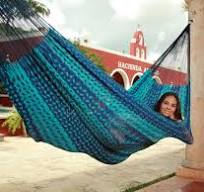
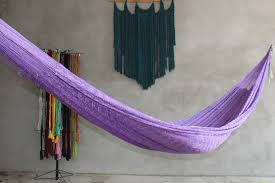
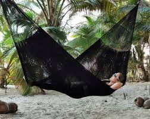
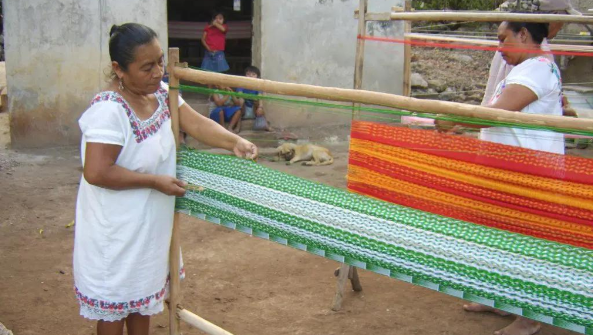
2. Guayaberas
Las
guayaberas yucatecas son prendas tradicionales que combinan elegancia y
frescura, ideales para climas cálidos y ocasiones formales o casuales. Si estás en Campeche o en cualquier parte de México, tienes diversas opciones para adquirir estas prendas artesanales.
Guayaberas Destacadas
-
Teya Artesanal Guayabera Bordada Yucateca Azul Marino Modelo Colibrí Manga Larga para Hombre
Con un diseño tradicional y bordados artesanales, esta guayabera es ideal para eventos formales.
-
Guayabera Yucateca Lino Modelo Montejo Manga Larga
Una opción asequible sin sacrificar la calidad, confeccionada en lino para mayor frescura.
-
Guayabera Cubana De Dama. Mayakim. Somos Fabricantes
Diseñada especialmente para mujeres, combina el estilo tradicional con un toque femenino.
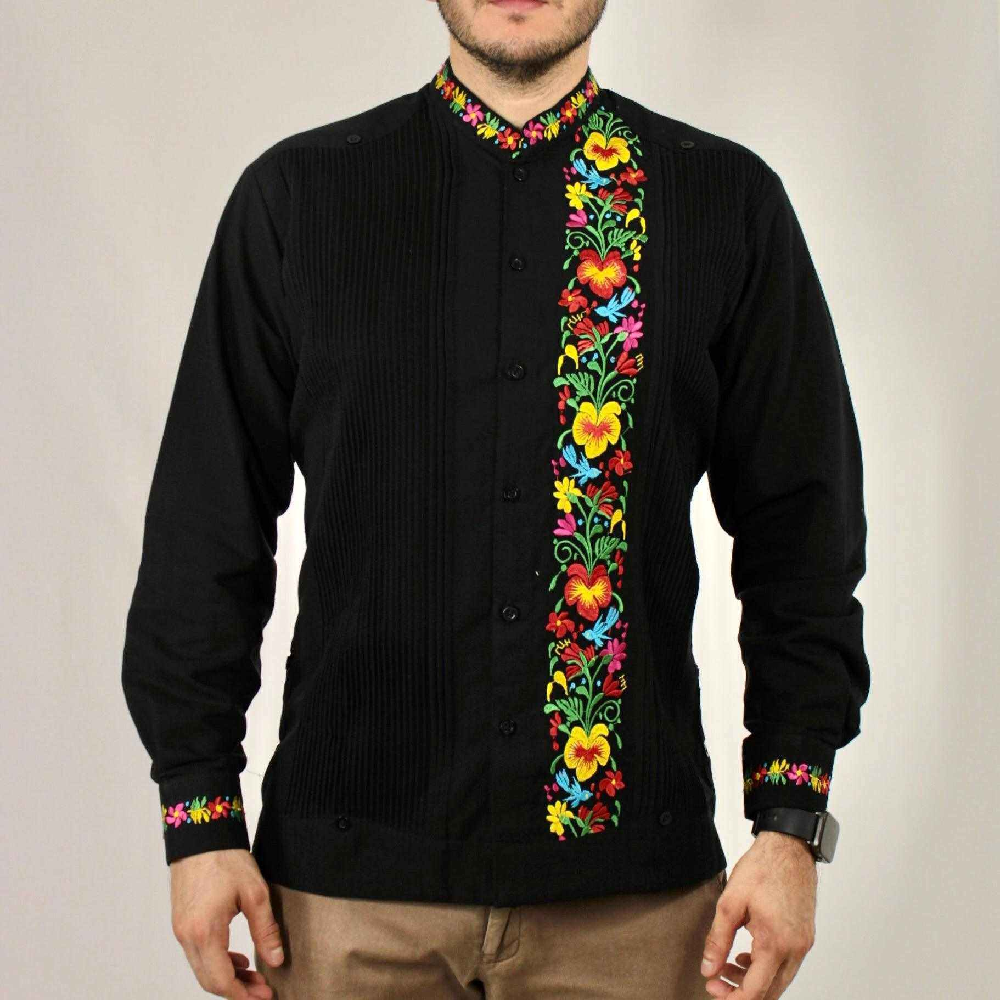
3. Bordados mayas
Los
bordados mayas son una expresión artística ancestral que refleja la
cosmovisión, identidad y herencia cultural del pueblo maya en la
península de Yucatán. Estos
bordados, transmitidos de generación en generación, no solo embellecen
prendas tradicionales como huipiles y ternos, sino que también narran
historias y simbolismos profundos.
Técnicas Tradicionales de Bordado Maya
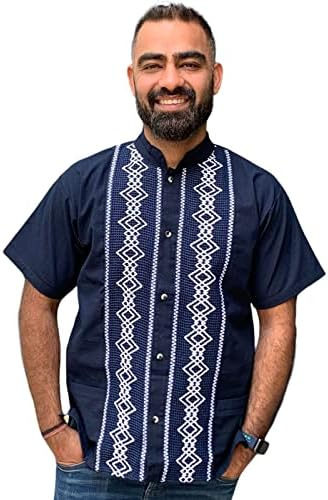
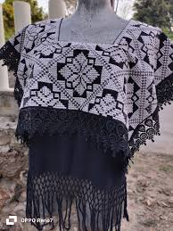
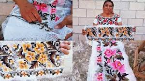
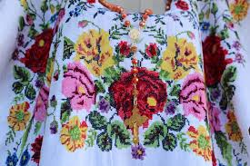
4. Joyería de filigrana
La
joyería de filigrana es una expresión artesanal de gran valor cultural
en México, especialmente en regiones como Yucatán, Oaxaca y Chiapas. Esta
técnica milenaria consiste en entrelazar finísimos hilos de metales
preciosos, como plata u oro, para crear piezas delicadas y detalladas
que reflejan la identidad y tradiciones de las comunidades
¿Qué es la filigrana?
La
filigrana es una técnica de orfebrería que implica el uso de hilos muy
delgados de metal, generalmente plata u oro, que se entrelazan y
sueldan para formar diseños intrincados y ornamentales. Este
arte requiere una gran destreza y paciencia, ya que la elaboración de
una sola pieza puede llevar desde varias horas hasta semanas,
dependiendo de su complejidad.
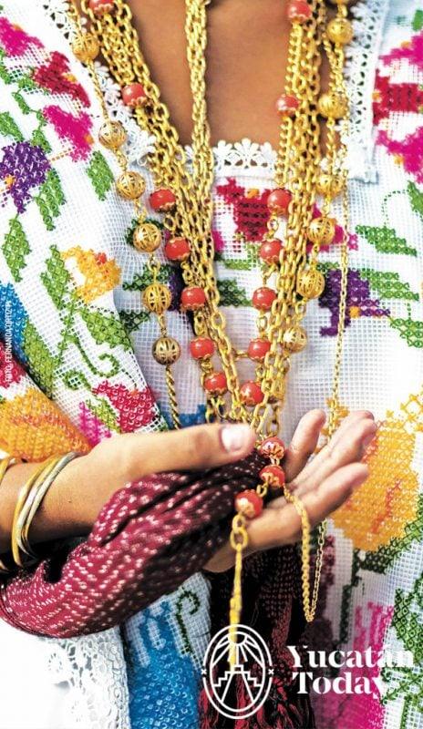
5. Objetos de madera tallada
La madera tallada es una
expresión artesanal que ha sido practicada durante siglos en Yucatán,
con técnicas transmitidas de generación en generación. Estas piezas
combinan la habilidad del tallado con diseños que reflejan la cultura,
la naturaleza y las tradiciones mayas.
Características y técnicas
-
Materiales:
Se utiliza principalmente madera de cedro, caoba, ciricote, entre otras
maderas locales. Estas maderas son apreciadas por su durabilidad y
facilidad para el tallado.
-
Técnicas:
El tallado se realiza a mano con gubias y cuchillos especiales para
lograr detalles finos y precisos. Las piezas suelen ser acabadas con
barnices naturales o aceites para proteger la madera y realzar su
belleza.
-
Diseños:
Los motivos son una mezcla de elementos naturales (flores, animales,
hojas) y simbólicos (figuras mayas, patrones geométricos). A veces, el
tallado incluye representaciones de escenas de la vida cotidiana o
leyendas tradicionales.
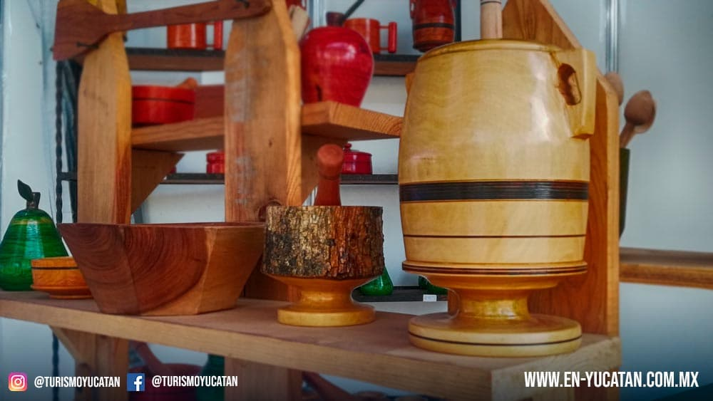
6. Alfarería y cerámica
Alfarería y Cerámica en Yucatán
La alfarería y cerámica en
Yucatán son expresiones ancestrales que reflejan la identidad cultural
y artística del pueblo maya yucateco. Esta actividad ha sido practicada
desde tiempos prehispánicos y sigue vigente, combinando técnicas
tradicionales con diseños contemporáneos.
Técnicas y materiales
-
Materiales:
Se usa principalmente barro local que, al ser cocido en hornos tradicionales, se transforma en piezas resistentes y decorativas.
-
Técnicas:
-
Modelado a mano: Piezas moldeadas manualmente, con acabados que muestran la destreza del artesano.
-
Torno: En algunas comunidades usan torno manual o eléctrico para dar forma a las piezas.
-
Decoración:
Se emplean pinturas naturales y esmaltes para decorar vasijas, platos,
cazuelas y otros objetos. El tradicional estilo mayense incluye motivos
geométricos y figuras de la naturaleza.
-
Cocción:
La cocción puede ser en hornos de leña o modernos, dependiendo de la comunidad y el tipo de cerámica que se busca.
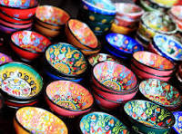
7. Sombreros de jipi-japa
Sombreros Jipijapa
-
Origen del nombre:
Aunque
se les llama comúnmente “jipijapa” en México, su verdadero origen está
en Ecuador, donde se elaboran con la fibra de una planta llamada Carludovica palmata, conocida como paja toquilla.
-
Material:
La fibra de paja toquilla es ligera, flexible y resistente, ideal para tejer sombreros cómodos y frescos.
-
Proceso de elaboración:
La fabricación de estos sombreros es un proceso artesanal que puede
durar desde varios días hasta semanas, dependiendo del grado de detalle
y finura del tejido. Se emplean técnicas tradicionales que se han
transmitido por generaciones.
-
Características:
-
Son livianos y frescos, ideales para climas cálidos como el de Yucatán.
-
Su tejido puede variar desde más
grueso y rústico hasta extremadamente fino y delicado, como el famoso
"Panamá Hat" de alta calidad.
-
Su diseño clásico incluye ala ancha para protección solar y copa ventilada.
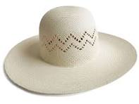
8. Productos de henequén
El henequén
es una planta fibrosa nativa de la península de Yucatán, cuyo cultivo y
aprovechamiento han sido fundamentales para la economía y cultura de la
región durante siglos.
¿Qué es el henequén?
-
Es una planta similar al agave, de la cual se extraen fibras resistentes y duraderas.
-
Estas fibras se
utilizan para elaborar diversos productos artesanales y industriales,
principalmente para cuerda, sacos y tejidos.
️ Productos típicos elaborados con henequén
-
Bolsos y carteras:
-
Artesanales, tejidos a mano con diferentes técnicas que combinan funcionalidad y estilo.
-
Algunos incluyen detalles decorativos con bordados o mezclas con otros materiales.
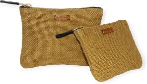
-
Sombreros de henequén:
-
Cuerdas y cordeles:
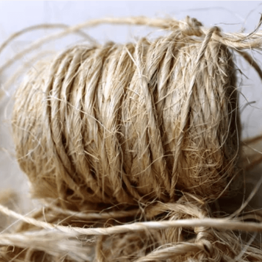